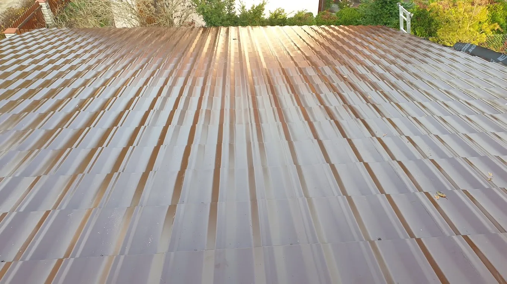

Dekarstwo · Kowanowo, woj. wielkopolskie
Dach robiony
na lata, nie na sezon.
Pokrycia dachowe, papa termozgrzewalna, izolacje, obróbki blacharskie i podbitki — wykonane z dbałością o każdy detal. Działamy solidnie i terminowo na terenie województwa wielkopolskiego.
5,0 · 5 opinii w Google
Zakres usług
Od pojedynczej łaty
po całą halę magazynową.
Firma Rafała Koteckiego działa w branży dekarskiej od 2020 roku. Wybieramy sprawdzone pokrycia i materiały izolacyjne, dbając o szczelność, trwałość i estetykę każdej realizacji — od dachu domu jednorodzinnego po obudowę hali przemysłowej.
Montaż
Pokrycia dachowe
Kompleksowy montaż dachów płaskich, dwuspadowych i wielospadowych, dopasowany do konstrukcji budynku.
Dowiedz się więcejKrycie
Papa termozgrzewalna
Szczelne krycie dachów płaskich papą termozgrzewalną, z dbałością o poprawne zgrzewy i detale.
Dowiedz się więcejOchrona
Izolacje dachów
Skuteczna izolacja termiczna i przeciwwilgociowa, chroniąca budynek przed stratami ciepła.
Dowiedz się więcejDetale
Obróbki blacharskie
Precyzyjne obróbki kominów, okien połaciowych i pasów nadrynnowych, wykonane starannie i szczelnie.
Dowiedz się więcejWykończenie
Podbitki dachowe
Montaż podbitek, które chronią więźbę przed wilgocią i nadają dachowi estetyczny wygląd.
Dowiedz się więcejKonstrukcje
Hale z płyt warstwowych
Budowa i obudowa hal przemysłowych oraz magazynowych, dopasowanych do potrzeb inwestora.
Dowiedz się więcejRealizacje
Zdjęcia prac
prosto z dachu.
Wybrane realizacje: od pokryć dachów jednorodzinnych po obudowy hal przemysłowych z płyt warstwowych. Każdy obiekt traktujemy z taką samą starannością, od pierwszej łaty po ostatnią obróbkę.


Dlaczego Kotecki
Czym wyróżniamy się
spośród innych firm dekarskich.
Detale
Dbałość o detale
Każdy zgrzew, obróbka i mocowanie wykonane z precyzją, która decyduje o szczelności na lata.
Jakość
Solidność wykonania
Sprawdzone materiały i rzetelne wykonanie — od dachu domu jednorodzinnego po halę przemysłową.
Czas
Terminowość
Ustalony termin to termin, na który można liczyć. Działamy zgodnie z harmonogramem prac.
Opinie
Co mówią klienci?
"Pan Rafał to solidna firma. Wykonywał dla nas prace dekarskie: opierzenie komina, montaż ławki dla kominiarza plus płotki antyśniegowe. A ponadto wspaniale wykonana podbitka z boazerii. Wszystkie te prace wykonywane z wielką dokładnością, fachowo i z poświęceniem. Polecamy Pana Rafała, ponieważ jest to człowiek słowny, uczciwy i starający się o dobro klienta."
"Rafał — fachowiec w pracach dekarskich. Zrobił dla nas zadaszenie na taras. Wszystko zrobione sprawnie i szybko, polecam!"
"Z pełnym przekonaniem polecam współpracę z Rafałem przy wykonaniu zadaszenia tarasu! Efekt końcowy spełnił nasze oczekiwania – konstrukcja z drewna i poliwęglanu wygląda solidnie i bardzo estetycznie. Rafał wykazał się dużym profesjonalizmem. Wszystko zostało wykonane terminowo i z dbałością. Serdecznie dziękujemy i polecamy każdemu, kto szuka rzetelnego fachowca!"
"Bardzo solidny. Prace blacharskie bardzo dobrze wykonane. Polecam."
"Super kontakt. Temat bardzo szybko załatwiony, firma godna polecenia."
Obszar działania
Kowanowo i województwo wielkopolskie.
Realizujemy zlecenia na terenie województwa wielkopolskiego, w tym w Obornikach, Poznaniu i okolicznych miejscowościach. Zadzwoń, aby ustalić dostępność w Twojej okolicy.
Umów wycenę
Porozmawiajmy
o Twoim dachu.
Skontaktuj się z nami i omów swoje potrzeby związane z dachem lub halą. Drobna naprawa czy pełna realizacja — jesteśmy gotowi pomóc.
601 864 021 Zadzwoń terazWłaściciel
Rafał Kotecki
Adres
Kowanowo 15, 64-600 Oborniki
Godziny otwarcia
Pon–pt: 07:00–17:00
Sobota: 07:00–14:00
Niedziela: zamknięte
Telefon
601 864 021Ocena Google
5,0 · 5 opinii